Imagine a situation where you have a monorepo with the web application and the Cypress tests living in their separate subfolders. You might want to keep the tests slightly separate to avoid clashing dependencies and typings. In the example repo bahmutov/todo-app-subfolders I have put the frontend, the api, and the Cypress tests in their own 3 subfolders
1 | repo/ |
We need to run npm install in each subfolder when running locally. To test the app, we need to start the api, start the frontend, and then open Cypress. Tip: the project uses start-server-and-test utility to do it all with a single npm run dev command.
How do we install the dependencies and run the tests on CircleCI? Normally, I would use Cypress CircleCI Orb, but in this case, it is simpler to do the caching on our own, since everything resides in different subfolders. Fear not, we can write a config file without a problem.
🎁 If you want to see the completed config file, visit the bahmutov/todo-app-subfolders and check out its .circleci/config.yml file.
Note: if Cypress folder is outside the frontend application folder, it might be hard to set up the component testing, as Cypress won't be able to find the webpack / application settings to bundle the tests correctly. In my example, I only use the end-to-end tests, so that is not a concern.
Install the dependencies
First, things first. We need to install the dependencies in each subfolder. Let's write a simple "install" job
1 | version: 2.1 |
Tip: I love printing the local files using my custom list-files command, since you never know for sure how a workspace or a cache is restored and what files you get. In our case, it looks correct after checking out the files from the repo:
1 | current folder /root/project |
The job runs through its commands and installs the dependencies one by one.
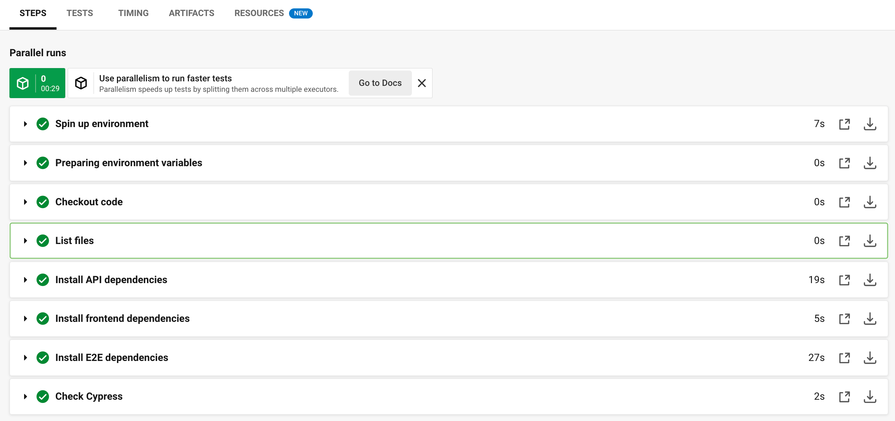
Nice, it works. If we print the files again, we will see api/node_modules, frontend/node_modules, and e2e/node_modules folders. Running the next CI workflow has a problem; it has to reinstall everything from scratch, making it slow. Can we speed things up? What folders should we cache and restore to avoid reinstalling? Every time we run the npm ci command, it removes the local node_modules folder. Thus we cannot cache api/node_modules, frontend/node_modules, etc. We need to cache the downloaded NPM modules stored by default in the ~/.npm folder. Plus we need to cache Cypress binary, which normally is in the ~/.cache/Cypress folder.
Tip: you can see where Cypress keeps its downloaded binary files using the npx cypress cache path command. For example, on a Mac laptop:
1 | $ npx cypress cache path |
Tip 2: you can show the basic Cypress information after installing it using the npx cypress info:
1 | - run: |
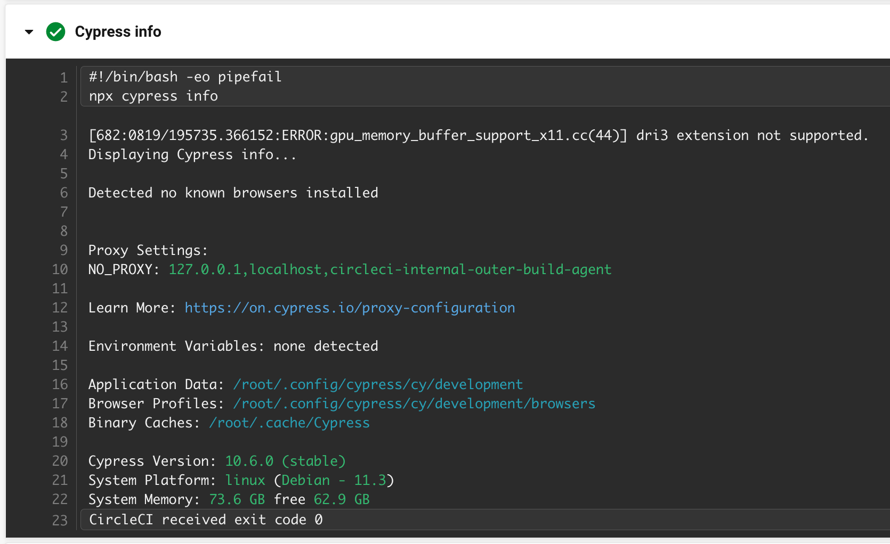
The npx cypress info shows that Cypress binaries are cached inside /root/.cache/Cypress folder, which is the user home folder that can be accessed via ~/.cache/Cypress in general. We need to cache this folder to skip re-downloading the Cypress binary file on each test flow run.
Thus we will cache the following folders:
~/.npmwhere NPM downloads modules duringnpm iandnpm cicommand before placing them intonode_modules~/.cache/Cypresswhere Cypress downloads and stores its binary file
Tip: if we are using Yarn, we could simply cache ~/.cache/yarn and ~/.cache/Cypress folders, or even ~/.cache.
We will throw away the cached files if any of our lock files change.
1 | install-cypress: |
Tip: you might want to split single NPM cache into 3 separate ones for each project. This way if one of the lock files changes, then no need to create a new cache. But in practice, that is not that important.
Pass the installed files
Great, we have one CI job that installs the dependencies very quickly, because it restores the dependencies very quickly unless the package lock files have changed. How about running Cypress tests?
We could have run the end-to-end tests right there in the install-cypress job:
1 | # install-cypress job |
But as the number of tests grows, it makes more sense to run the tests in parallel using several test jobs. Those jobs should grab all files installed by the install-cypress job. Here is where we need to play a trick and combine CircleCI workspaces with restoring a cache. Let's revisit the end of the install-cypress job and extend it with persist_to_workspace CircleCI command:
1 | # install-cypress job |
Any job that requires the install-cypress job will get its workspace, which is all files from the project's repo. The command persist_to_workspace runs inside the current project working directory /root/project and saves all repo files plus the installed node_modules subfolders already present. It won't save any outside files like ~/.cache/Cypress though, so keep this in mind when restoring (attaching) the workspace in the job
1 | test-cypress: |
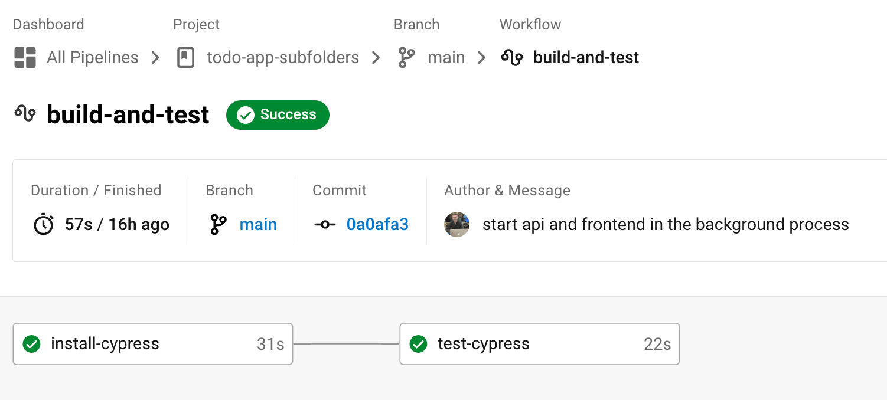
We are passing all /root/project files by attaching the previously saved workspace using the attach_workspace command. This restores the files in the /root/project folder (notice we don't have to use the checkout command at all)
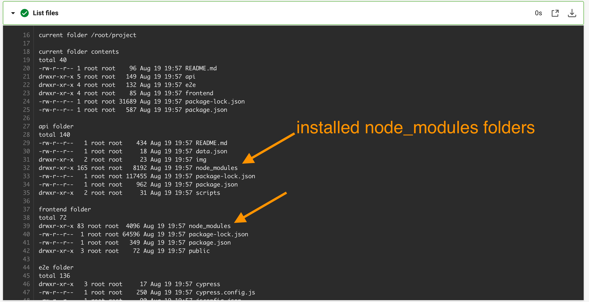
Then we restore the Cypress binary cache folder ~/.cache/Cypress and we are good to go - all dependencies are there. The entire workspace and how it passes files from one job to another can be seen in the diagram below
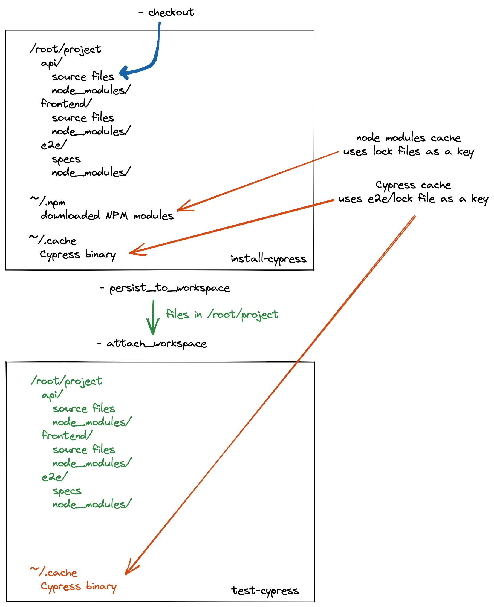
We start both services as background processes, run the tests, and CircleCI shuts down the running background processes when the job finishes.
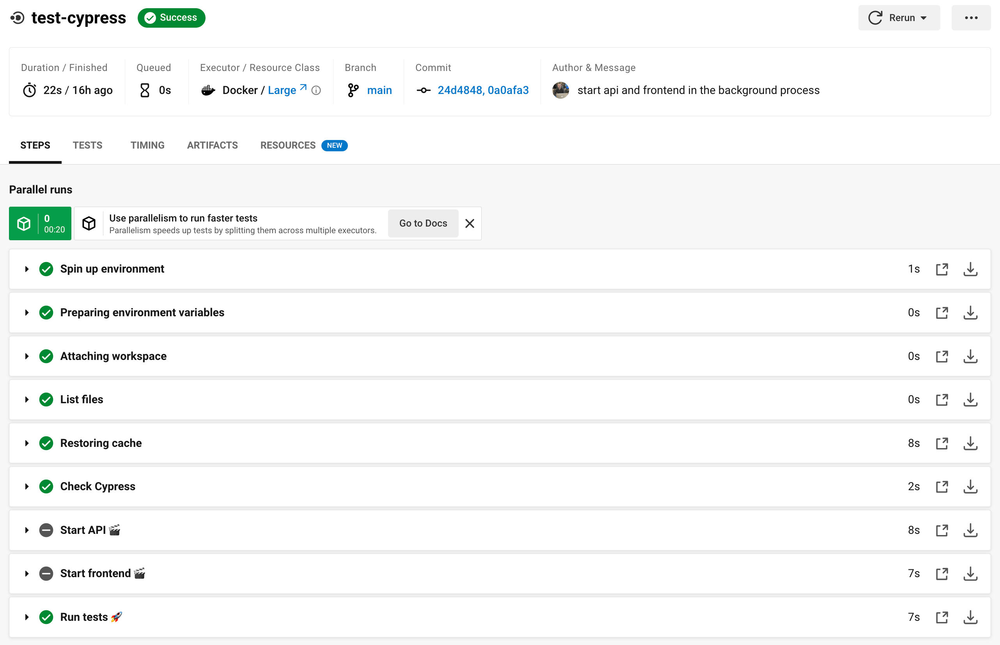
Note: the command persist_to_workspace can only pass local files, and our ~/.cache folder is outside. We could install Cypress in a different local subfolder using CYPRESS_CACHE_FOLDER, see Cypress caching guide. Then we could skip the restore_cache command.
Parallel testing
Ok, all is going well. Until we get more tests, and suddenly a single test job running the tests one after another takes too long.
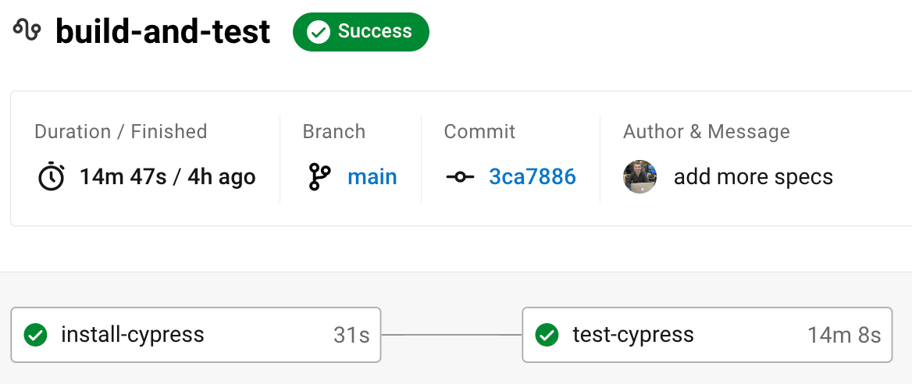
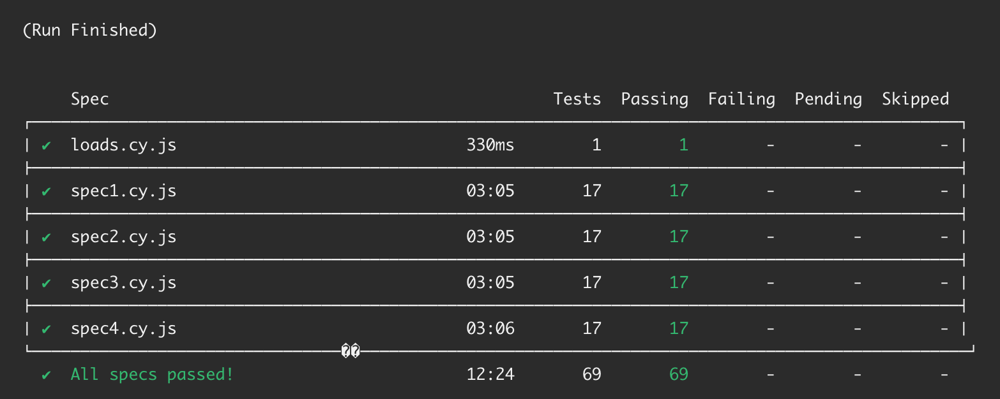
We need to turn on Cypress spec parallelization, thus running specs in parallel in different test containers. No problem.
- start recording the tests on Cypress dashboard by creating a new project from Cypress Test Runner
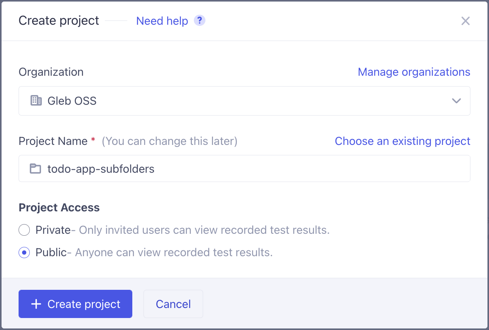
- set the record key as CircleCI environment variable
CYPRESS_RECORD_KEY
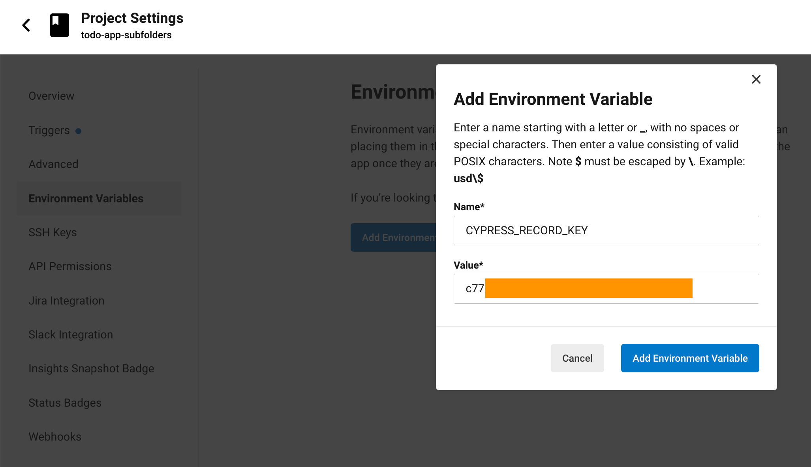
- use N CircleCI test containers in parallel and run the tests in parallel
1 | test-cypress: |
That's it - you only need the parallelism parameter and pass the cypress run --record --parallel arguments, and Cypress does the rest. Let's look at the new timings.
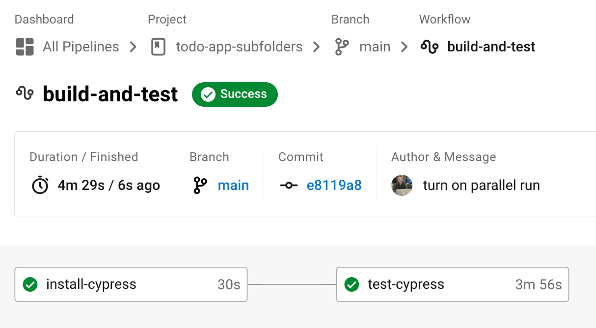
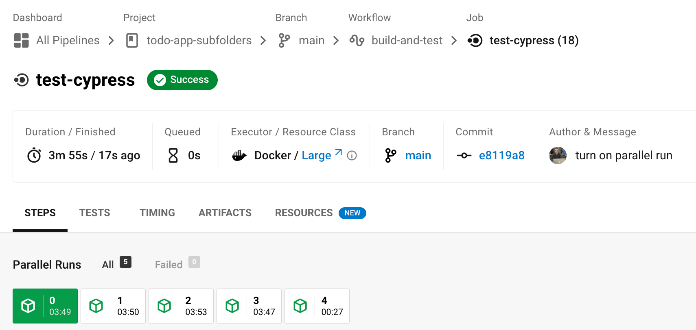
Each test job grabbed the workspace created by the single install job and quickly restored the Cypress binary from cache. Then the tests were split by the Cypress Dashboard across the machines that joined the test run.
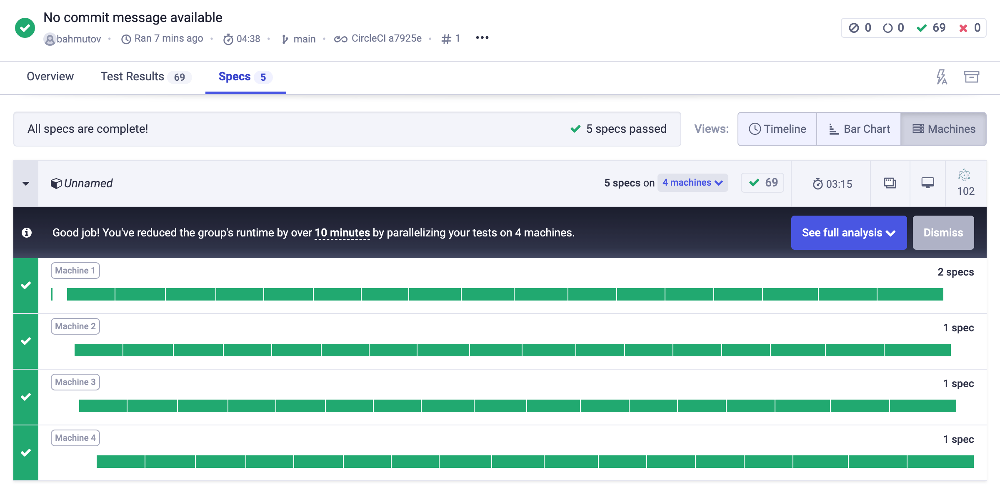
Note: CircleCI has tested using 5 jobs in parallel, but the Cypress Dashboard is showing specs split across 4 machines. Yup, by the time the 5th machine has started, the specs have already been allocated and the last machine had nothing to do, so it has finished quickly.
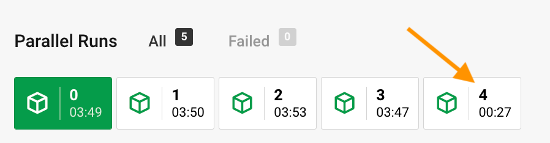
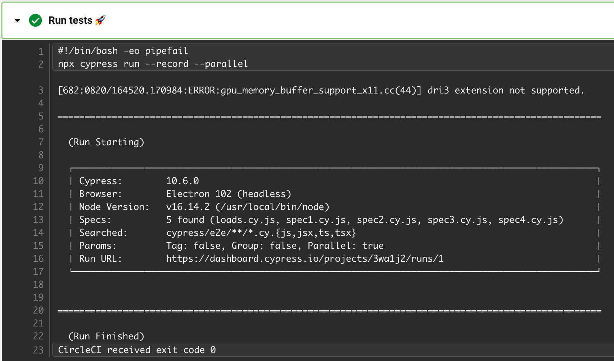
Bonus 1: Wait for the site before starting the tests
Sometimes our frontend takes a while to start. We want to wait and check for the site to be up before running the tests. I always use the utility wait-on for this (and sometimes I combine starting the server with waiting for it to start using start-server-and-test CLI module). Let's add the wait-on as a dev dependency to the frontend package
1 | npm i -D wait-on |
I will add a script to wait for the local port 5555 to respond to HTTP GET requests (by default wait-on sends HTTP HEAD command, which many bundlers ignore)
1 | { |
On CircleCI we will run the wait-for-app command after starting the server but before running Cypress tests
1 | - run: |
That's it - even if the server takes up to a minute to start responding to the external requests, it is ok. End-to-end tests will run only after the web app starts.
See also
- the final .circleci/config.yml in the repo bahmutov/todo-app-subfolders
- my other blog posts about CircleCI
- Do Not Let Cypress Cache Snowball on CI
- Start CircleCI Machines Faster by Using RAM Disk
- Make Cypress Run Faster by Splitting Specs
- Testing Time Zones in Parallel
- Cypress CI guide
Bonus 1: set Cypress Dashboard tag for the main branch
Let's say we want to tag the test runs on Cypress Dashboard but only the ones made from the main branch. We can write a conditional command when running the tests
1 | - run: |